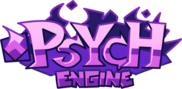

Community directory
Psych Engine porters
Selected creators who publish Psych Engine ports. Select a porter to view their profile and videos.
Open channel →
Directory criteria
Channels and videos link to their original YouTube publishers. The directory is an editorial index: it does not mirror downloads or replace each creator's installation notes.